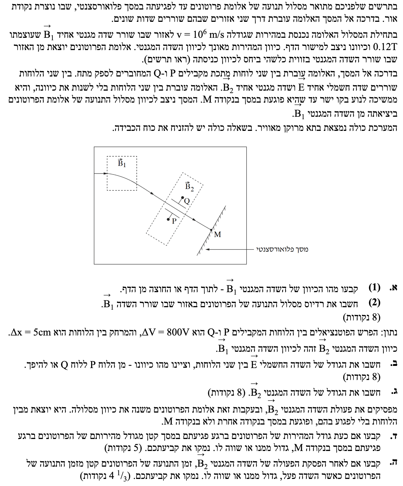
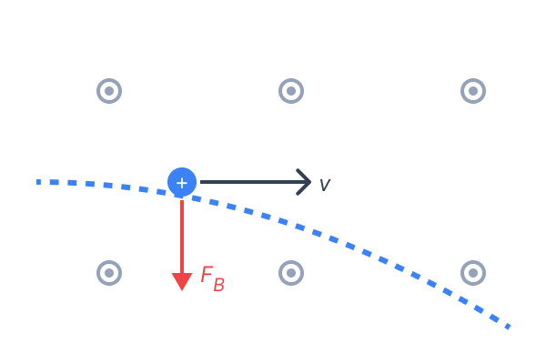
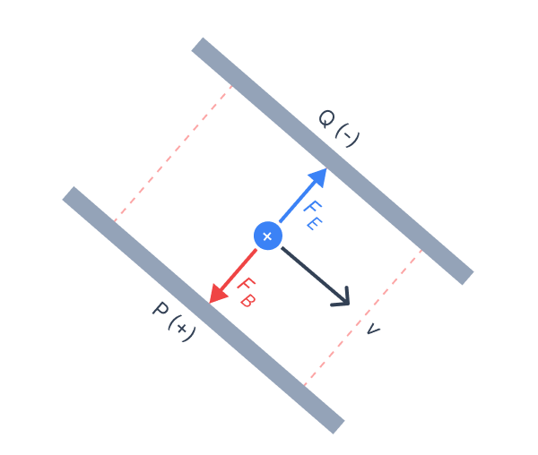

פתרון בגרות מוסבר ומפורט
פיזיקה 5 יח"ל - חשמל 2023, שאלה 5
פתרון מלא ומודרך (שדות מגנטיים וחשמליים)
עודכן:
--- --:--:--

[תמונת השאלה המקורית]
לא נמצאה תמונה בשם question-image.png באותה תיקייה. אך כל הנתונים מופיעים בגוף הפתרון.
מה נתון:
- חלקיק: פרוטון, כלומר מטען חיובי. נסמן: \( q > 0 \).
- כיוון המהירות ההתחלתית \( \vec{v} \): ימינה (על פי התרשים).
- השפעת השדה: מתוך התרשים, מסלול הפרוטון מתעקם כלפי מטה בתוך אזור השדה \( \vec{B}_1 \).
- תאוצת הכובד מוזנחת (אין כוח כבידה).
מה מחפשים:
לקבוע האם כיוון השדה המגנטי \( \vec{B}_1 \) הוא לתוך הדף או החוצה מן הדף.
נוסחאות ועקרונות בשימוש:
נשתמש בעקרון הפעולה של כוח מגנטי על מטען נע. כיוון הכוח נקבע על ידי כלל יד ימין למטען חיובי.
\( F = qvB \sin \alpha \)
פתרון צעד-אחר-צעד:
מכיוון שהמסלול מתעקם למטה, אנו מסיקים שכיוון הכוח המגנטי \( \vec{F}_B \) המופעל על הפרוטון הוא למטה. נפעיל את כלל יד ימין:
- נכוון את האגודל ימינה (כיוון המהירות \( \vec{v} \)).
- נכוון את כף היד כלפי מטה (הכיוון אליו פועל הכוח המגנטי עבור מטען חיובי).
- כתוצאה מכך, ארבע האצבעות יצביעו החוצה ממישור הדף (כיוון השדה המגנטי).

[תרשים - image-1.png]
מסקנה: כיוון השדה המגנטי \( \vec{B}_1 \) הוא החוצה מן הדף.
טיפ מורה:
איך ידענו שהכוח הוא למטה? בתנועה מעגלית, הכוח השקול תמיד מצביע למרכז המעגל. אם נדמיין את המשך העקומה כמעגל שלם, מרכזו נמצא מתחת למסלול. כיוון שהכוח המגנטי אנך למהירות ולשדה, הוא בהכרח הכוח הצנטריפטלי כאן.
מה נתון:
- גודל המהירות: \( v = 10^6 \text{ m/s} \). (היחידות תקינות - MKS).
- גודל השדה המגנטי: \( B_1 = 0.12 \text{ T} \).
- מתוך דף הנוסחאות, מטען הפרוטון: \( q = 1.6 \times 10^{-19} \text{ C} \).
- מתוך דף הנוסחאות, מסת הפרוטון: \( m = 1.67 \times 10^{-27} \text{ kg} \).
מה מחפשים:
את רדיוס מסלול התנועה המעגלי של הפרוטון באזור \( B_1 \), שנסמן באות \( r \).
נוסחאות בשימוש:
כאשר חלקיק טעון נע במאונך לשדה מגנטי אחיד, הכוח המגנטי מהווה את הכוח הרדיאלי (צנטריפטלי).
\( F = qvB \)
\( \Sigma F = m a_R \)
\( a_R = \frac{v^2}{r} \)
חישוב:
נשווה את הכוח המגנטי לכוח הרדיאלי (החוק השני של ניוטון לתנועה מעגלית):
\[ qvB = m\frac{v^2}{r} \]
נצמצם \( v \) אחד ונבודד את הרדיוס \( r \):
\[ r = \frac{mv}{qB} \]
נציב את הנתונים:
\[ r = \frac{1.67 \times 10^{-27} \cdot 10^6}{1.6 \times 10^{-19} \cdot 0.12} = \frac{1.67 \times 10^{-21}}{1.92 \times 10^{-20}} \approx 0.086979 \text{ m} \]
נעגל ל-3 ספרות מהותיות: רדיוס מסלול התנועה הוא \( r = 0.0870 \text{ m} \) (או \( 8.70 \text{ cm} \)).
טיפ מורה (אזהרה):
הנוסחה \( r = \frac{mv}{qB} \) לא מופיעה ישירות בדף הנוסחאות! בבגרות חובה לפתח אותה כפי שהראינו מהחוק השני של ניוטון, אחרת יורדות נקודות על "קפיצה לתוצאה".
מה נתון:
- הפרש פוטנציאלים: \( \Delta V = 800 \text{ V} \).
- מרחק בין הלוחות: \( \Delta x = 5 \text{ cm} \). נמיר יחידות: \( \Delta x = 0.05 \text{ m} \).
- כיוון השדה \( \vec{B}_2 \) החוצה מן הדף (זהה לכיוון \( \vec{B}_1 \)).
- האלומה ממשיכה לנוע בקו ישר.
מה מחפשים:
את גודלו של השדה החשמלי \( E \) ואת כיוונו (מלוח P ללוח Q או להפך).
נוסחאות ועקרונות בשימוש:
תנועה בקו ישר ומהירות קבועה משמעותה שקול כוחות אפס (הכוח החשמלי מבטל את המגנטי).
\( E = \frac{\Delta V}{\Delta x} \)
\( \Sigma \vec{F} = 0 \)
פתרון צעד-אחר-צעד:
שלב 1: חישוב הגודל
\[ E = \frac{800}{0.05} = 16000 \text{ V/m} \]
שלב 2: קביעת הכיוון באמצעות תרשים כוחות
- על פי כלל יד ימין (אגודל כיוון מהירות ימינה, אצבעות כיוון שדה החוצה), הכוח המגנטי \( \vec{F}_B \) מופעל כלפי מטה, כלומר לכיוון משטח P (הלוח התחתון).
- כדי שיתקיים \( \Sigma F = 0 \), הכוח החשמלי \( \vec{F}_E \) חייב להיות הפוך אליו, כלומר כלפי מעלה, לכיוון משטח Q (הלוח העליון).
- למטען חיובי, כיוון השדה החשמלי זהה לכיוון הכוח החשמלי, ולכן השדה מכוון מלוח P אל לוח Q.

[תרשים - image-2.png]
גודל השדה החשמלי הוא \( E = 1.60 \times 10^4 \text{ V/m} \), וכיוונו מלוח P ללוח Q.
טיפ מורה:
שימו לב ששני הכוחות (החשמלי והמגנטי) מאונכים לכיוון התנועה, ומכיוון שהם מבטלים זה את זה, שקול הכוחות הוא אפס (\( \Sigma F = 0 \)). במצב כזה, על פי החוק הראשון של ניוטון, הפרוטון יתמיד במצבו וימשיך לנוע בקו ישר ובמהירות קבועה.
מה נתון:
- מהירות הפרוטון נשארה קבועה: \( v = 10^6 \text{ m/s} \).
- השדה החשמלי שחישבנו: \( E = 16000 \text{ V/m} \).
- כוחות מאוזנים לאורך הציר האנכי למסלול.
מה מחפשים:
את גודלו של השדה המגנטי בין הלוחות, \( B_2 \).
נוסחאות:
\( F_B = qvB \)
\( F_E = qE \)
\( \Sigma F = 0 \Rightarrow F_B = F_E \)
חישוב:
נשווה את הביטויים של שני הכוחות, נצמצם את המטען \( q \) ונבודד את \( B_2 \):
\[ qvB_2 = qE \]
\[ vB_2 = E \]
\[ B_2 = \frac{E}{v} \]
נציב את הנתונים:
\[ B_2 = \frac{16000}{10^6} = 0.016 \text{ T} \]
גודל השדה המגנטי הוא \( B_2 = 0.0160 \text{ T} \).
טיפ מורה:
מתקן כזה, שבו שדה חשמלי ושדה מגנטי מאונכים זה לזה מבטלים אחד את השני עבור מהירות ספציפית, נקרא "בורר מהירויות". שימו לב שהמסה והמטען של החלקיק הצטמצמו! כל חלקיק בעל מהירות זהה יעבור בקו ישר.
מה נתון:
- השדה המגנטי \( B_2 \) הופסק.
- השדה החשמלי \( E \) ממשיך לפעול.
- הפרוטון יוצא מהלוחות למרחב נטול שדות (מחוץ ללוחות המהירות קבועה עד למסך).
מה מחפשים:
לקבוע האם גודל מהירות הפגיעה במסך עכשיו יהיה קטן, גדול או שווה לגודל המהירות שהייתה בנקודה M (אשר הייתה שווה ל-\( v_0 \)). יש לנמק.
נוסחאות ועקרונות בשימוש:
\( W_{total} = \Delta E_k \)
\( E_k = \frac{1}{2}mv^2 \)
נימוק התשובה:
נציג שני נימוקים אפשריים (מספיק אחד):
נימוק א': שיקולי עבודה ואנרגיה
כאשר השדה המגנטי כבוי, פועל על הפרוטון רק הכוח החשמלי הגורם לסטייה כלפי מעלה, לכיוון לוח Q. מאחר שיש לו העתק בכיוון פעולת הכוח החשמלי, הכוח החשמלי עושה עבודה חיובית (\( W > 0 \)).
לפי משפט עבודה-אנרגיה קינטית, אם העבודה חיובית, האנרגיה הקינטית גדלה (\( \Delta E_k > 0 \)). מאחר שהאנרגיה הקינטית גדלה, בהכרח גודל המהירות גדל.
נימוק ב': קינמטיקה ופירוק וקטורים
המהירות בציר המקביל ללוחות אינה משתנה (\( v_x = v_0 \)). לעומת זאת, בציר האנכי ללוחות הכוח החשמלי מעניק תאוצה קבועה כלפי מעלה, ולכן המהירות בציר זה גדלה מאפס לערך כלשהו \( v_y > 0 \).
גודל המהירות השקולה הוא \( v = \sqrt{v_x^2 + v_y^2} \). מכיוון שנוסף רכיב מהירות חדש בציר y, ברור ש- \( v > v_0 \).
גודל מהירות הפרוטונים ברגע הפגיעה במסך גדול יותר מגודל המהירות בנקודה M.
טיפ מורה:
שדה מגנטי פועל תמיד בניצב למהירות החלקיק, ולכן הוא לא עושה עבודה לעולם ואינו משנה את גודל המהירות. כוח חשמלי, לעומת זאת, יכול להאיץ חלקיק ולשנות את האנרגיה הקינטית שלו.
סימולציה: תנועת הפרוטונים אל המסך
שימו לב: המהירות האופקית של שני הפרוטונים זהה לחלוטין, ולכן שניהם מתקדמים באותו קצב לאורך ציר ה-x ופוגעים במסך באותו רגע בדיוק.
פרוטון בקו ישר (שדות מאוזנים)
פרוטון מאיץ מעלה (שדה מגנטי כבוי)
מה נתון:
- המסך הפלואורסצנטי ניצב לכיוון התנועה המקורי של האלומות.
- כאמור בסעיף ד', הפרוטון סוטה אך ורק בכיוון ציר \( y \) (הציר הניצב ללוחות).
מה מחפשים:
לקבוע האם זמן התנועה כאשר \( B_2 \) הופסק שונה או שווה לזמן התנועה כאשר \( B_2 \) פעל.
נוסחאות ועקרונות בשימוש:
עקרון אי-התלות של תנועות בצירים מאונכים, ונוסחת קינמטיקה במהירות קבועה.
\( x = x_0 + v_x t \)
חישוב והסבר:
נבחר מערכת צירים שבה ציר ה-\( x \) הוא לאורך קו ישר העובר בין הלוחות, וציר ה-\( y \) אנכי לו. המסך מוצב בניצב לציר ה-\( x \), כלומר יש לו מרחק אופקי קבוע \( L \).
בשני המקרים (עם שדה מגנטי או בלעדיו), הכוח השקול בציר ה-\( x \) הוא אפס. התאוצה בציר זה היא אפס, ומהירות הפרוטון בציר \( x \) נשארת קבועה ושווה ל-\( v_0 \).
\[ t = \frac{L}{v_x} = \frac{L}{v_0} \]
מכיוון שהמרחק האופקי \( L \) והמהירות האופקית \( v_x \) נשארו זהים בשני המקרים, הזמן שיידרש לפרוטון להגיע למסך יהיה שווה.
זמן התנועה לאחר הפסקת פעולתו של השדה המגנטי שווה לזמן התנועה כאשר השדה פעל.
טיפ מורה:
זהו יישום קלאסי של עקרון ההפרדה של גלילאו (אי-תלות התנועה בצירים). תנועה אופקית ותנועה אנכית מתנהלות במקביל, מבלי להשפיע אחת על השנייה. בדומה לזריקה אופקית בקינמטיקה.